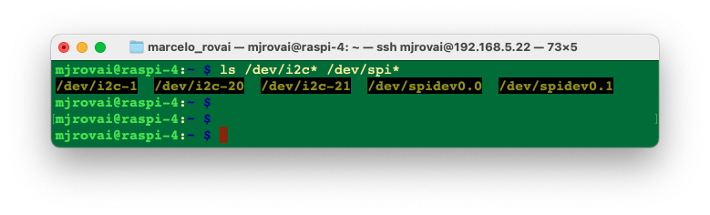
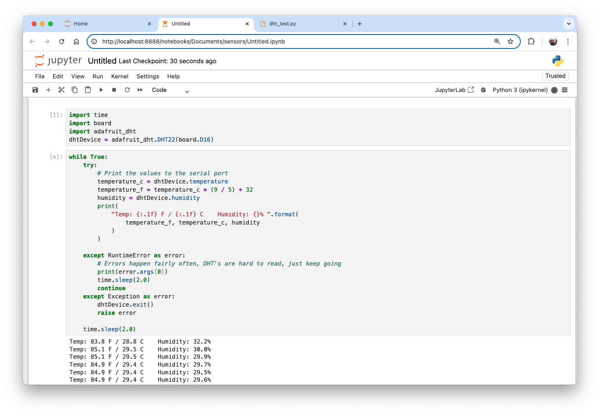

Physical Computing with Raspberry Pi
From Sensors to Smart Analysis with Small Language Models
Introduction
Physical computing creates interactive systems that sense and respond to the analog world. While this field has traditionally focused on direct sensor readings and programmed responses, we’re entering an exciting new era where Large Language Models (LLMs) can add sophisticated decision-making and natural language interaction to physical computing projects.
In the Small Language Models (SLM) chapter, we learned how it is possible to run an LLM (or, more precisely, an SLM) in a Single Board Computer (SBC) like the Raspberry Pi. This tutorial will guide us through setting up a Raspberry Pi for physical computing, with an eye toward future AI integration. We’ll cover:
- Setting up the Raspberry Pi for physical computing
- Working with essential sensors and actuators
- Understanding GPIO (General Purpose Input/Output) programming
- Establishing a foundation for integrating LLMs with physical devices
- Creating interactive systems that can respond to both sensor data and natural language commands
We will also use a Jupyter notebook (programmed in Python) to interact with sensors and actuators—an important and necessary first step toward the goal of integrating the Raspi with an SLM. The combination of Raspberry Pi’s versatility and the power of SLMs opens up exciting possibilities for creating more intelligent and responsive physical computing systems.
The diagram below gives us an overview of the project:
Prerequisites
- Raspberry Pi (model 4 or 5)
- DHT22 Temperature and Relative Humidity Sensor
- BMP280 Barometric Pressure, Temperature and Altitude Sensor
- Colored LEDs (3x)
- Push Button (1x)
- Resistor 4K7 ohm (2x)
- Resistor 220 or 330 ohm (3x)
Install the Raspi Operating System
As described in Setup, we will need an operating system to use the Raspberry Pi. By default, Raspberry Pis check for an operating system on any SD card inserted in the slot, so we should install an operating system using Raspberry Pi Imager.
Raspberry Pi Imager is a tool for downloading and writing images on macOS, Windows, and Linux. It includes many popular operating system images for Raspberry Pi. We will also use the Imager to preconfigure credentials and remote access settings.
After downloading the Imager and installing it on your computer, use a new and empty SD card. Select the device (RASPBERRY PI Zero, 4 or 5), the Operating System (RASPBERRY PI OS 32 or 64-BIT), and your Storage Device:

We should also define the options, such as the hostname, username, password, LAN configuration (on GENERAL TAB), and, more importantly, SSH Enable on the SERVICES tab.
Using the Secure Shell (SSH) protocol, you can access the terminal of a Raspberry Pi remotely from another computer on the same network.

After burning the OS to the SD card, install it in the Raspi5’s SD slot and plug in the 5V power source.
Interacting with the Raspi via SSH
The easiest way to interact with the Raspi is via SSH (“Headless”). We can use a Terminal (MAC/Linux) or PuTTy (Windows).
On terminal type <username>@<hostname>.local, for example:
ssh mjrovai@rpi-5.localYou should replace mjrovai with your username and rpi-5 with the hostname chosen during set-u

When you see the prompt:
mjrovai@rpi-5:~ $It means that you are interacting remotely with your Raspi.
Note:
ssh <username>@<hostname>.localsometimes does not work. In those cases, try:ssh <username>@<ip address>
It is a good practice to update the system regularly. For that, you should run:
sudo apt-get updatePip is a tool for installing external Python modules on a Raspberry Pi. However, it has not been enabled in recent OS versions. To allow it, you should run the command (only once):
sudo rm /usr/lib/python3.11/EXTERNALLY-MANAGEDTo shut down the Rpi-Zero via terminal:
Do not simply pull the power cord when you want to turn off your Raspberry Pi. The Raspi may still be writing data to the SD card, in which case, merely powering down may result in data loss or, even worse, a corrupted SD card.
For safety shut down, use the command line:
sudo shutdown -h nowTo avoid possible data loss and SD card corruption, wait a few seconds after shutting down for the Raspberry Pi’s LED to stop blinking and go dark before removing the power. Once the LED goes out, it’s safe to power down.
Accessing the GPIOs
A simple way to reach the GPIO pins on a Raspberry Pi is from the GPIO Zero Library. With a few lines of code in Python, we can control actuators, read sensors, etc. It was created by Ben Nuttall of the Raspberry Pi Foundation, Dave Jones, and other contributors (GitHub).
GPIO Zero is installed by default in the Raspberry Pi OS.
Pin Numbering
It is essential to mention that the GPIO Zero Library uses Broadcom (BCM) pin numbering for the GPIO pins, as opposed to physical (board) numbering. Any pin marked “GPIO” in the following diagrams can be used as a PIN. For example, if an LED were attached to “GPIO13,” you would specify the PIN as 18 rather than 33 (the physical one).
“Hello World”: Blinking an LED
To connect our RPi to the world, let’s first connect:
- Physical Pin 6 (GND) to GND Breadboard Power Grid (Blue -), using a black jumper
- Physical Pin 1 (3.3V) to +VCC Breadboard Power Grid (Red +), using a red jumper
Now, let’s connect an LED (red) using the physical pin 13 (GPIO13) connected to the LED cathode (longer LED leg). Connect the LED anode to the breadboard GND using a 330 ohms resistor to reduce the current drained from the Raspi, as shown below:
Once the HW is connected, let’s create a Python script to turn on the LED:
from gpiozero import LED
led = LED(13)
led.on()We can use any text editor (such as Nano) to create and run the script. Save the file, for example, as led_test.py, and then execute it using the terminal:
python led_test.pyAs we can see, it is elementary to code using the GPIO Zero Library.
Now, let’s blink the LED (the actual “Hello world”) when talking about physical computing. To do that, we must also import another library, which is time. We need it to define how long the LED will be ON and OFF. In our case below, the LED will blink at a 1-second time.
from gpiozero import LED
from time import sleep
led = LED(18)
while True:
led.on()
sleep(1)
led.off()
sleep(1)Alternatively, we can reduce the blink code as below:
from gpiozero import LED
from signal import pause
red = LED(17)
red.blink()
pause()Installing all LEDs (the “actuators”)
The LEDs can be used as “actuators”; depending on the condition of a code running on our Pi, we can command one of the LEDs to fire! We will install two more LEDs besides the red one already installed. Follow the diagram and install the yellow (on GPIO 19 ) and the green (on GPIO 26).
For testing we can run a similar code as the used with the single red led, changing the pin accordantly, for example.
from gpiozero import LED
ledRed = LED(13)
ledYlw = LED(19)
ledGrn = LED(26)
ledRed.off()
ledYlw.off()
ledGrn.off()
ledRed.on()
ledYlw.on()
ledGrn.on()
ledRed.off()
ledYlw.off()
ledGrn.off()Remember that instead of LEDs, we could have relays, motors, etc.
Sensors Installation and setup
In this section, we will setup the Raspberry Pi to capture data from several different sensors:
Sensors and Communication type:
- Button (Command via a Push-Button) ==> Digital direct connection
- DHT22 (Temperature and Humidity) ==> Digital communication
- BMP280 (Temperature and Pressure) ==> I2C Protocol
Installing Adafruit CircuitPython
The GPIO Zero library is an excellent hardware interfacing library for Raspberry Pi. It’s great for digital in/out, analog inputs, servos, basic sensors, etc. However, it doesn’t cover SPI/I2C sensors or drivers, and by using CircuitPython via adafruit_blinka, we can unlock all of the drivers and example code developed by Adafruit!
Note that we will keep using GPIO Zero for pins, buttons and LEDs.
Enable Interfaces
Run these commands to enable the various interfaces such as I2C and SPI:
sudo raspi-config nonint do_i2c 0
sudo raspi-config nonint do_spi 0
sudo raspi-config nonint do_serial_hw 0
sudo raspi-config nonint disable_raspi_config_at_boot 0Install Blinka and Dependencies
sudo apt-get install -y i2c-tools libgpiod-dev python-libgpiod
pip install --upgrade adafruit-blinkaCheck I2C and SPI
The script will automatically enable I2C and SPI. You can run the following command to verify:
ls /dev/i2c* /dev/spi*
Blinka Test
Create a new file called blinka_test.py with nano or your favorite text editor and put the following in:
import board
import digitalio
import busio
print("Hello, blinka!")
# Try to create a Digital input
pin = digitalio.DigitalInOut(board.D4)
print("Digital IO ok!")
# Try to create an I2C device
i2c = busio.I2C(board.SCL, board.SDA)
print("I2C ok!")
# Try to create an SPI device
spi = busio.SPI(board.SCLK, board.MOSI, board.MISO)
print("SPI ok!")
print("done!")Save it and run it at the command line:
python blinka_test.pyDHT22 - Temperature & Humidity Sensor
The first sensor to be installed will be the DHT22 for capturing air temperature and relative humidity data.
Overview
The low-cost DHT temperature and humidity sensors are elementary and slow but great for logging basic data. They consist of a capacitive humidity sensor and a thermistor. A bare chip inside performs the analog-to-digital conversion and spits out a digital signal with the temperature and humidity. The digital signal is relatively easy to read using any microcontroller.
DHT22 Main characteristics:
Suitable for 0-100% humidity readings with 2-5% accuracy
Suitable for -40 to 125°C temperature readings ±0.5°C accuracy
No more than 0.5 Hz sampling rate (once every 2 seconds)
Low cost
3 to 5V power and I/O
2.5mA max current use during conversion (while requesting data)
Body size 15.1mm x 25mm x 7.7mm
4 pins with 0.1” spacing
Once we use the sensor at distances less than 20m, a 4K7 ohm resistor should be connected between the Data and VCC pins. The DHT22 output data pin will be connected to Raspberry GPIO 16. Check the electrical diagram, connecting the sensor to RPi pins as below:
- Pin 1 - Vcc ==> 3.3V
- Pin 2 - Data ==> GPIO 16
- Pin 3 - Not Connect
- Pin 4 - Gnd ==> Gnd
Do not forget to Install the 4K7 ohm resistor between the VCC and Data pins.
Once the sensor is connected, we must install its library on our Raspberry Pi. First, we should install the Adafruit CircuitPython library, which we have already done, and the Adafruit_CircuitPython_DHT.
pip install adafruit-circuitpython-dhtOn your Raspberry, starting at home, go to Documents.
cd DocumentsCreate a directory to install the library and move to there:
mkdir sensors
cd sensorsCreate a new Python script as below and name it, for example, dht_test.py:
import time
import board
import adafruit_dht
dhtDevice = adafruit_dht.DHT22(board.D16)
while True:
try:
# Print the values to the serial port
temperature_c = dhtDevice.temperature
temperature_f = temperature_c * (9 / 5) + 32
humidity = dhtDevice.humidity
print(
"Temp: {:.1f} F / {:.1f} C Humidity: {}% ".format(
temperature_f, temperature_c, humidity
)
)
except RuntimeError as error:
# Errors happen fairly often, DHT's are hard to read,
# just keep going
print(error.args[0])
time.sleep(2.0)
continue
except Exception as error:
dhtDevice.exit()
raise error
Installing the BMP280: Barometric Pressure & Altitude Sensor
Sensor Overview:
Environmental sensing has become increasingly important in various industries, from weather forecasting to indoor navigation and consumer electronics. At the forefront of this technological advancement are sensors like the BMP280 and BMP180 (deprected), which excel in measuring temperature and barometric pressure with exceptional precision and reliability.
As its predecessor, the BMP180, the BMP280 is an absolute barometric pressure sensor, which is especially feasible for mobile applications. Its diminutive dimensions and low power consumption allow for its implementation in battery-powered devices such as mobile phones, GPS modules, or watches. The BMP280 is based on Bosch’s proven piezo-resistive pressure sensor technology featuring high accuracy and linearity as well as long-term stability and high EMC robustness. Numerous device operation options guarantee the highest flexibility. The device is optimized for power consumption, resolution, and filter performance.
Technical data
| Parameter | Technical data |
|---|---|
| Operation range | Pressure: 300…1100 hPa Temp.: -40…85°C |
| Absolute accuracy (950…1050 hPa, 0…+40°C) | ~ ±1 hPa |
| Relative accuracy p = 700…900hPa (Temp. @ 25°C) | ± 0.12 hPa (typical) equivalent to ±1 m |
| Average typical current consumption (1 Hz dt/rate) | 3.4 μA @ 1 Hz |
| Average current consumption (1 Hz dt refresh rate) | 2.74 μA, typical (ultra-low power mode) |
| Average current consumption in sleep mode | 0.1 μA |
| Average measurement time | 5.5 msec (ultra-low power preset) |
| Supply voltage VDDIO | 1.2 … 3.6 V |
| Supply voltage VDD | 1.71 … 3.6 V |
| Resolution of data | Pressure: 0.01 hPa ( < 10 cm) Temp.: 0.01° C |
| Temperature coefficient offset (+25°…+40°C @ 900hPa) | 1.5 Pa/K, equiv. to 12.6 cm/K |
| Interface | I²C and SPI |
BMP280 Sensor Installation
Follow the diagram and make the connections:
- Vin ==> 3.3V
- GND ==> GND
- SCL ==> GPIO 3
- SDA ==> GPIO 2
Enabling I2C Interface
Go to RPi Configuration and confirm that the I2C interface is enabled. If not, enable it.
sudo raspi-config nonint do_i2c 0Using the BMP280
If everything has been installed and connected correctly, you can turn on your Rapspi and start interpreting the BMP180’s information about the environment.
The first thing to do is to check if the Raspi sees your BMP280. Try the following in a terminal:
sudo i2cdetect -y 1We should confirm that the BMP280 is on channel 77 (default) or 76.
In my case, the bus address is 0x76, so we should define it during the library installation.
Installing the BMP 280 Library:
Once the sensor is connected, we must install its library on our Raspi. For that, we should install the Adafruit_CircuitPython_BMP280.
pip install adafruit-circuitpython-bmp280Create a new Python script as below and name it, for example, bmp280_test.py:
import time
import board
import adafruit_bmp280
i2c = board.I2C()
bmp280 = adafruit_bmp280.Adafruit_BMP280_I2C(i2c, address = 0x76)
bmp280.sea_level_pressure = 1013.25
while True:
print("\nTemperature: %0.1f C" % bmp280.temperature)
print("Pressure: %0.1f hPa" % bmp280.pressure)
print("Altitude = %0.2f meters" % bmp280.altitude)
time.sleep(2)Execute the script:
python bmp280Test.pyThe Terminal shows the result.
Note that that pressure is presented in hPa. See the next section to understand this unit better.
Measuring Weather and Altitude With BMP280

Let’s take some time to understand more about what we will get with the BMP readings.
You can skip this part of the tutorial, or return later.
The BMP280 (and its predecessor, the BMP180) was designed to measure atmospheric pressure accurately. Atmospheric pressure varies with both weather and altitude.
What is Atmospheric Pressure?
Atmospheric pressure is a force that the air around you exerts on everything. The weight of the gasses in the atmosphere creates atmospheric pressure. A standard unit of pressure is “pounds per square inch” or psi. We will use the international notation, newtons per square meter, called pascals (Pa).
If you took 1 cm wide column of air would weigh about 1 kg
This weight, pressing down on the footprint of that column, creates the atmospheric pressure that we can measure with sensors like the BMP280. Because that cm-wide column of air weighs about 1 kg, the average sea level pressure is about 101,325 pascals, or better, 1013.25 hPa (1 hPa is also known as milibar - mbar). This will drop about 4% for every 300 meters you ascend. The higher you get, the less pressure you’ll see because the column to the top of the atmosphere is much shorter and weighs less. This is useful because you can determine your altitude by measuring the pressure and doing math.
The air pressure at 3,810 meters is only half that at sea level.
The BMP280 outputs absolute pressure in hPa (mbar). One pascal is a minimal amount of pressure, approximately the amount that a sheet of paper will exert resting on a table. You will often see measurements in hectopascals (1 hPa = 100 Pa). The library here provides outputs of floating-point values in hPa, equaling one millibar (mbar).
Here are some conversions to other pressure units:
- 1 hPa = 100 Pa = 1 mbar = 0.001 bar
- 1 hPa = 0.75006168 Torr
- 1 hPa = 0.01450377 psi (pounds per square inch)
- 1 hPa = 0.02953337 inHg (inches of mercury)
- 1 hPa = 0.00098692 atm (standard atmospheres)
Temperature Effects
Because temperature affects the density of a gas, density affects the mass of a gas, and mass affects the pressure (whew), atmospheric pressure will change dramatically with temperature. Pilots know this as “density altitude”, which makes it easier to take off on a cold day than a hot one because the air is denser and has a more significant aerodynamic effect. To compensate for temperature, the BMP280 includes a rather good temperature sensor and a pressure sensor.
To perform a pressure reading, you first take a temperature reading, then combine that with a raw pressure reading to come up with a final temperature-compensated pressure measurement. (The library makes all of this very easy.)
Measuring Absolute Pressure
If your application requires measuring absolute pressure, all you have to do is get a temperature reading, then perform a pressure reading (see the test script for details). The final pressure reading will be in hPa = mbar. You can convert this to a different unit using the above conversion factors.
Note that the absolute pressure of the atmosphere will vary with both your altitude and the current weather patterns, both of which are useful things to measure.
Weather Observations
The atmospheric pressure at any given location on Earth (or anywhere with an atmosphere) isn’t constant. The complex interaction between the earth’s spin, axis tilt, and many other factors result in moving areas of higher and lower pressure, which in turn cause the variations in weather we see every day. By watching for changes in pressure, you can predict short-term changes in the weather. For example, dropping pressure usually means wet weather or a storm is approaching (a low-pressure system is moving in). Rising pressure usually means clear weather is coming (a high-pressure system is moving through). But remember that atmospheric pressure also varies with altitude. The absolute pressure in my home, Lo Barnechea, in Chile (altitude 960m), will always be lower than that in San Francisco (less than 2 meters, almost sea level). If weather stations just reported their absolute pressure, it would be challenging to compare pressure measurements from one location to another (and large-scale weather predictions depend on measurements from as many stations as possible).
To solve this problem, weather stations continuously remove the effects of altitude from their reported pressure readings by mathematically adding the equivalent fixed pressure to make it appear that the reading was taken at sea level. When you do this, a higher reading in San Francisco than in Lo Barnechea will always be because of weather patterns and not because of altitude.
Sea Level Pressure Calculation
The See Level Pressure can be calculated with the formula:
Where,
po = SeaLevel Pressure
p = Atmospheric Pressure
L = Temperature Lapse Rate
h = Altitude
To = Sea Level Standard Temperature
g = Earth Surface Gravitational Acceleration
M = Molar Mass Of Dry Air
R = Universal Gas ConstantHaving the absolute pressure in Pa, you check the sea level pressure using the Calculator.
Or calculating in Python, where the altitude is the real altitude in meters where the sensor is located.
presSeaLevel = pres / pow(1.0 - altitude/44330.0, 5.255) Determining Altitude
Since pressure varies with altitude, you can use a pressure sensor to measure altitude (with a few caveats). The average pressure of the atmosphere at sea level is 1013.25 hPa (or mbar). This drops off to zero as you climb towards the vacuum of space. Because the curve of this drop-off is well understood, you can compute the altitude difference between two pressure measurements (p and p0) by using a specific equation. The BMP280 gives the measured altitude using bmp280Sensor.altitude.
The above explanation was based on the BMP 180 Sparkfun tutorial.
Playing with Sensors and Actuators
Installing Jupyter Notebook
We all know that Jupyter Notebook is a fantastic tool—or, better yet, an open-source web application that allows you to create and share documents containing live code, equations, visualizations, and narrative text. Jupyter Notebook is used mainly in Data Science, cleaning and transforming data, numerical simulation, statistical modeling, data visualization, machine learning, and much more!
How about using Jupyter Notebooks to control Raspberry Pi GPIOs?
In this section, we will learn how to install Jupyter Notebook on a Raspberry Pi. Then, we will read sensors and act on actuators directly on the Pi.
To install Jupyter on your Raspberry (that will run with Python 3), open Terminal and enter the following commands:
pip install jupyter
sudo reboot
jupyter notebook --generate-configEdit the config file:
nano ~/.jupyter/jupyter_notebook_config.pyAdd/modify these lines:
c.NotebookApp.ip = '0.0.0.0' # Listen on all interfaces
c.NotebookApp.open_browser = False # Disable browser auto-launch
c.NotebookApp.port = 8888 # Default port (change if needed)Now, on the Raspi terminal, start the Jupyter notebook server with the command:
jupyter notebook --no-browserYou will need the Token; you can copy it from the terminal as shown above.
On your Desktop, set up SSH tunneling:
ssh -N -L 8888:localhost:8888 username@raspberry_pi_ipThe Jupyter Notebook will be running as a server on:
http:localhost:8888The first time you connect, you’ll need the token that appears in the Pi terminal when you start the notebook server.
When you start your Pi and want to use Jupyter Notebook, type the “Jupyter Notebook” command on your terminal and keep it running. This is very important! If you need to use the terminal for another task, such as running a program, open a new Terminal window.
To stop the server and close the “kernels” (the Jupyter notebooks), press [Ctrl] + [C].
Testing the Notebook setup
Let’s create a new notebook (Kernel: Python 3). Open dht_test.py, copy the code, and paste it into the notebook. That’s it. We can see the temperature and humidity values appearing on the cell. To interrupt the execution, go to the [stop] button at the top menu.

OK, this means we can access the physical world from our notebook! Let’s create a more structured code for dealing with sensors and actuators.
Initialization
Import libraries, instantiate and initialize sensors/actuators
# time library
import time
import datetime
# Adafruit DHT library (Temperature/Humidity)
import board
import adafruit_dht
DHT22Sensor = adafruit_dht.DHT22(board.D16)
# BMP library (Pressure/Temperature)
import adafruit_bmp280
i2c = board.I2C()
bmp280Sensor = adafruit_bmp280.Adafruit_BMP280_I2C(i2c, address = 0x76)
bmp280Sensor.sea_level_pressure = 1013.25
# LEDs
from gpiozero import LED
ledRed = LED(13)
ledYlw = LED(19)
ledGrn = LED(26)
ledRed.off()
ledYlw.off()
ledGrn.off()
# Push-Button
from gpiozero import Button
button = Button(20)GPIO Input and Output
Create a function to get GPIO status:
# Get GPIO status data
def getGpioStatus():
global timeString
global buttonSts
global ledRedSts
global ledYlwSts
global ledGrnSts
# Get time of reading
now = datetime.datetime.now()
timeString = now.strftime("%Y-%m-%d %H:%M")
# Read GPIO Status
buttonSts = button.is_pressed
ledRedSts = ledRed.is_lit
ledYlwSts = ledYlw.is_lit
ledGrnSts = ledGrn.is_lit And another to print the status:
# Print GPIO status data
def PrintGpioStatus():
print ("Local Station Time: ", timeString)
print ("Led Red Status: ", ledRedSts)
print ("Led Yellow Status: ", ledYlwSts)
print ("Led Green Status: ", ledGrnSts)
print ("Push-Button Status: ", buttonSts)Now, we can, for example, turn on the LEDs:
ledRed.on()
ledYlw.on()
ledGrn.on()And see their status:
If you press the push-button, its status will also be shown:
And turning off the LEDS:
ledRed.off()
ledYlw.off()
ledGrn.off()We can create a function to simplify turning LEDs on and off:
# Acting on GPIOs and printing Status
def controlLeds(r, y, g):
if (r):
ledRed.on()
else:
ledRed.off()
if (y):
ledYlw.on()
else:
ledYlw.off()
if (g):
ledGrn.on()
else:
ledGrn.off()
getGpioStatus()
PrintGpioStatus()For example, turning on the Yellow LED:
Getting and displaying Sensor Data
First, we should create a function to read the BMP280 and calculate the pressure value at sea level, once the sensor only gives us the absolute pressure based on the actual altitude:
# Read data from BMP280
def bmp280GetData(real_altitude):
temp = bmp280Sensor.temperature
pres = bmp280Sensor.pressure
alt = bmp280Sensor.altitude
presSeaLevel = pres / pow(1.0 - real_altitude/44330.0, 5.255)
temp = round (temp, 1)
pres = round (pres, 2) # absolute pressure in mbar
alt = round (alt)
presSeaLevel = round (presSeaLevel, 2) # absolute pressure in mbar
return temp, pres, alt, presSeaLevelEntering the BMP280 real altitude where it is located, run the code:
bmp280GetData(960)As a result, we will get (26.9, 906.73, 927, 1017.29)which means:
- Temperature of 26.9 oC
- Absolute Pressure of 906.73 hPa
- Measured Altitude (from Pressure) of 927 m
- Sea Level converted Pressure: 1,017.29 hPa
Now, we will generate a unique function to get the BMP280 and the DHT data, including a timestamp:
# Get data (from local sensors)
def getSensorData(altReal=0):
global timeString
global humExt
global tempLab
global tempExt
global presSL
global altLab
global presAbs
global buttonSts
# Get time of reading
now = datetime.datetime.now()
timeString = now.strftime("%Y-%m-%d %H:%M")
tempLab, presAbs, altLab, presSL = bmp280GetData(altReal)
tempDHT = DHT22Sensor.temperature
humDHT = DHT22Sensor.humidity
if humDHT is not None and tempDHT is not None:
tempExt = round (tempDHT)
humExt = round (humDHT)And another function to print the values:
# Display important data on-screen
def printData():
print ("Local Station Time: ", timeString)
print ("External Air Temperature (DHT): ", tempExt, "oC")
print ("External Air Humidity (DHT): ", humExt, "%")
print ("Station Air Temperature (BMP): ", tempLab, "oC")
print ("Sea Level Air Pressure: ", presSL, "mBar")
print ("Absolute Station Air Pressure: ", presAbs, "mBar")
print ("Station Measured Altitude: ", altLab, "m")Runing them:
real_altitude = 960 # real altitude of where the BMP280 is installed
getSensorData(real_altitude)
printData()Results:
Using Python, we can command the actuators (LEDs) and read the sensors and GIPOs status at this stage. This is important, for example, to generate a data log to be read by an SLM in the future.
Widgets
pywidgets, or jupyter-widgets orwidgets, are interactive HTML widgets for Jupyter notebooks and the IPython kernel. Notebooks come alive when interactive widgets are used. We can gain control of our data and visualize changes in them.
Widgets are eventful Python objects that have a representation in the browser, often as a control like a slider, text box, etc. We can use widgets to build interactive GUIs for our project.
In this lab, for example, we will use a slide bar to control the state of actuators in real time, such as by turning on or off the LEDs. Widgets are great for adding more dynamic behavior to Jupyter Notebooks.
Installation
To use Widgets, we must install the Ipywidgets library using the commands:
pip install ipywidgetsAfter installation, we should call the library:
# widget library
from ipywidgets import interactive
import ipywidgets as widgetsfrom
IPython.display import displayAnd running the below line, we can control the LEDs in real-time:
f = interactive(controlLeds, r=(0,1,1), y=(0,1,1), g=(0,1,1))
display(f)This interactive widget is very easy to implement and very powerful. You can learn more about Interactive on this link: Interactive Widget.
Interacting an SLM with the Physical world
This section demonstrates in a simple way how to integrate a Small Language Model (SLM) with the sensors and LEDs we have set up. The diagram below shows how data flows from sensors through processing and AI analysis to control the actuators and ultimately provide user feedback.
We will use the Transformers library from Hugging Face for model loading and inference. This library provides the architecture for working with pre-trained language models, helping interact with the model, processing input prompts, and obtaining outputs.
Installation
pip install transformers torchLet’s create a simple SLM test in the Jupyter Notebook that checks if the model loads and measures inference time. The model used here is the TinyLLama 1.1B. We will ask a straightforward question:
"The weather today is"As a result, besides the SLM answer, we will also measure the latency.
Run this script:
import time
from transformers import pipeline
import torch
# Check if CUDA is available (it won't be on our case, Raspberry Pi)
device = "cuda" if torch.cuda.is_available() else "cpu"
print(f"Using device: {device}")
# Load the model and measure loading time
start_time = time.time()
model='TinyLlama/TinyLlama-1.1B-intermediate-step-1431k-3T'
generator = pipeline('text-generation',
model=model,
device=device)
load_time = time.time() - start_time
print(f"Model loading time: {load_time:.2f} seconds")
# Test prompt
test_prompt = "The weather today is"
# Measure inference time
start_time = time.time()
response = generator(test_prompt,
max_length=50,
num_return_sequences=1,
temperature=0.7)
inference_time = time.time() - start_time
print(f"\nTest prompt: {test_prompt}")
print(f"Generated response: {response[0]['generated_text']}")
print(f"Inference time: {inference_time:.2f} seconds")As we can see, the SLM works, but the latency is very high (+3 minutes). It is OK because this particular test is on a Raspberry Pi 4. With a Raspberry Pi 5, the result would be better.:
The Raspi uses around 1GB of memory (model + process) and all four cores to process the answer. The model alone needs around 800MB.
Now, let us create a code showing a basic interaction pattern where the SLM can respond to sensor data and interact with the LEDs.
Install the Libraries:
import time
import datetime
import board
import adafruit_dht
import adafruit_bmp280
from gpiozero import LED, Button
from transformers import pipelineInitialize sensors
DHT22Sensor = adafruit_dht.DHT22(board.D16)
i2c = board.I2C()
bmp280Sensor = adafruit_bmp280.Adafruit_BMP280_I2C(i2c, address=0x76)
bmp280Sensor.sea_level_pressure = 1013.25Initialize LEDs and Button
ledRed = LED(13)
ledYlw = LED(19)
ledGrn = LED(26)
button = Button(20)Initialize the SLM pipeline
# We're using a small model suitable for Raspberry Pi
model='TinyLlama/TinyLlama-1.1B-intermediate-step-1431k-3T'
generator = pipeline('text-generation',
model=model,
device='cpu')Support Functions
Now, let’s create support functions for readings from all sensors and control the LEDs:
def get_sensor_data():
"""Get current readings from all sensors"""
try:
temp_dht = DHT22Sensor.temperature
humidity = DHT22Sensor.humidity
temp_bmp = bmp280Sensor.temperature
pressure = bmp280Sensor.pressure
return {
'temperature_dht': round(temp_dht, 1) if temp_dht else None,
'humidity': round(humidity, 1) if humidity else None,
'temperature_bmp': round(temp_bmp, 1),
'pressure': round(pressure, 1)
}
except RuntimeError:
return None
def control_leds(red=False, yellow=False, green=False):
"""Control LED states"""
ledRed.value = red
ledYlw.value = yellow
ledGrn.value = green
def process_conditions(sensor_data):
"""Process sensor data and control LEDs based on conditions"""
if not sensor_data:
control_leds(red=True) # Error condition
return
temp = sensor_data['temperature_dht']
humidity = sensor_data['humidity']
# Example conditions for LED control
if temp > 30: # Hot
control_leds(red=True)
elif humidity > 70: # Humid
control_leds(yellow=True)
else: # Normal conditions
control_leds(green=True)Generating an SLM’s response
So far, the LEDs reaction is only based on logic, but let’s also use the SLM to “analyse” the sensors condition, generating a response based on that:
def generate_response(sensor_data):
"""Generate response based on sensor data using SLM"""
if not sensor_data:
return "Unable to read sensor data"
prompt = f"""Based on these sensor readings:
Temperature: {sensor_data['temperature_dht']}°C
Humidity: {sensor_data['humidity']}%
Pressure: {sensor_data['pressure']} hPa
Provide a brief status and recommendation in 2 sentences.
"""
# Generate response from SLM
response = generator(prompt,
max_length=100,
num_return_sequences=1,
temperature=0.7)[0]['generated_text']
return responseMain Function
And now, let’s create a main() function to wait for the user to, for example, press a button and, capture the data generated by the sensors, delivering some observation or recommendation from the SLM:
def main_loop():
"""Main program loop"""
print("Starting Physical Computing with SLM Integration...")
print("Press the button to get a reading and SLM response.")
try:
while True:
if button.is_pressed:
# Get sensor readings
sensor_data = get_sensor_data()
# Process conditions and control LEDs
process_conditions(sensor_data)
if sensor_data:
# Get SLM response
response = generate_response(sensor_data)
# Print current status
print("\nCurrent Readings:")
print(f"Temperature: {sensor_data['temperature_dht']}°C")
print(f"Humidity: {sensor_data['humidity']}%")
print(f"Pressure: {sensor_data['pressure']} hPa")
print("\nSLM Response:")
print(response)
time.sleep(2) # Debounce and allow time to read
time.sleep(0.1) # Reduce CPU usage
except KeyboardInterrupt:
print("\nShutting down...")
control_leds(False, False, False) # Turn off all LEDsTest Result
The sensors are read after the user presses the button to trigger a reading, and LEDs are controlled based on conditions. Sensor data is formatted into a prompt for the SLM to generate a response analyzing the current conditions. The results are displayed in the terminal, and the LED indicators are shown.
- Red: High temperature (>30°C) or error condition
- Yellow: High humidity (>70%)
- Green: Normal conditions
This simple code integrates a Small Language Model (TinyLlama model (1.1B parameters) with our physical computing setup, providing raw sensor data and intelligent responses from the SLM about the environmental conditions.
We can extend this first test to more sophisticated and valuable uses of the SLM integration, for example: adding:
- Starting the process from a User Prompt.
- Receive commands from the User to switch LEDs ON or OFF
- Provide the status of LEDS, Button, or specific sensor data from the user prompt
- Log data and responses to a file. Provide historical information by user request
- Implement different types of prompts for various use cases
Other Models
We can use other SLMs in a Raspberry Pi that have distinct ways of handling them. For example, many modern models use GGUF formats, and to use them, we need to install llama-cpp-python, which is designed to work with GGUF models.
Also, as we saw in a previous lab, Ollama is a great way to download and test SLMs on the Raspberry Pi.
Conclusion
Key Achievements
Throughout this tutorial, we’ve successfully: - Set up a complete physical computing environment using Raspberry Pi - Integrated multiple environmental sensors (DHT22 and BMP280) - Implemented visual feedback through LED actuators - Created interactive controls using push buttons - Integrated a Small Language Model (TinyLLama 1.1B) for intelligent analysis - Developed a foundation for AI-enhanced environmental monitoring
Technical Insights
Hardware Integration
The combination of digital (DHT22) and I2C (BMP280) sensors demonstrated different communication protocols and their implementations. This multi-sensor approach provides redundancy and comprehensive environmental monitoring capabilities. The LED actuators and push-button interface created a responsive and interactive system that bridges the digital and physical worlds.
Software Architecture
The layered software architecture we developed supports: 1. Low-level sensor communication and actuator control 2. Data preprocessing and validation 3. SLM integration for intelligent analysis 4. Interactive user interfaces through both hardware and software
AI Integration Learnings
The integration of TinyLLama 1.1B revealed several important insights: - Small Language Models can effectively run on edge devices like Raspberry Pi - Natural language processing can enhance sensor data interpretation - Real-time analysis is possible, though with some latency considerations - The system can provide human-readable insights from complex sensor data
Practical Applications
This project serves as a foundation for numerous real-world applications: - Environmental monitoring systems - Smart home automation - Industrial sensor networks - Educational platforms for IoT and AI integration - Prototyping platforms for larger-scale deployments
Challenges and Solutions
Throughout the development, we encountered and addressed several challenges: 1. Resource Constraints: - Optimized SLM inference for Raspberry Pi capabilities - Implemented efficient sensor reading strategies - Managed memory usage for stable operation
- Data Integration:
- Developed robust sensor data validation
- Created effective data preprocessing pipelines
- Implemented error handling for sensor failures
- AI Integration:
- Designed effective prompting strategies
- Managed inference latency
- Balanced accuracy with response time
Future Enhancements
The system can be extended in several directions: 1. Hardware Expansions: - Additional sensor types (air quality, light, motion) - Camera for IA applications - More complex actuators (displays, motors, relays) - Wireless connectivity options as WiFI, BLE, or LoRa 2. Software Improvements: - Advanced data logging and analysis - Web-based monitoring interface - Real-time visualization tools 3. AI Capabilities: 1. Models for detecting and counting objects 2. RAG or Fine-tuning SLM for specific applications 3. Multi-modal AI integration via sensor integration 4. Automated decision-making systems 5. Predictive maintenance capabilities
Final Thoughts
This tutorial demonstrates that integrating physical computing with AI is feasible and practical on accessible hardware like the Raspberry Pi. Combining sensors, actuators, and AI creates a powerful platform for developing intelligent environmental monitoring and control systems.
While the current implementation focuses on environmental monitoring, the principles and techniques can be adapted to various applications. The modular nature of hardware and software components allows for customization and expansion based on specific needs.
Integrating Small Language Models in physical computing opens new possibilities for creating more intuitive and intelligent IoT devices. As edge AI capabilities evolve, projects like this will become increasingly important in developing the next generation of smart devices and systems.
Remember that this is just the beginning. Our foundation can be extended in countless ways to create more sophisticated and capable systems. The key is building upon these basics while balancing functionality, reliability, and resource usage.